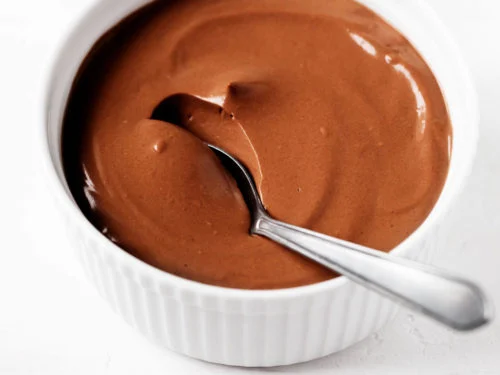

Tofu Chocolate Mousse
Silken tofu chocolate mousse is very silken, very smooth.
The recipe
Description
This recipe is simple and quick to make, and no one can tell it's made from tofu. Store in the fridge for around five days.
Ingredients
- 100 grams (3.5 ounces) of semi-sweet chocolate chips or roughly chopped chocolate
- 340 grams (12 ounces, or one package) of soft or silken tofu
- 2 tablespoons of maple syrup
Steps
- Melt all 100 grams of chcolate in the microwave, in 30-second intervals, until it's melted. Stir each interval. Let cool for a couple minutes.
- Put all the tofu, maple syrup and melted chocolate in a blender or food processor. Blend until smooth and combined.
- Refrigerate for a few hours before eating.
Notes
Leftovers will keep for five days or so. Stir a bit to smooth it out before eating.